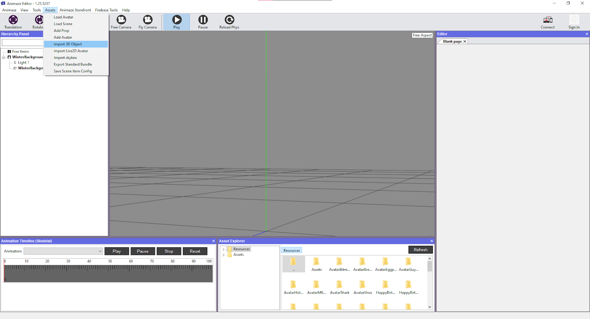
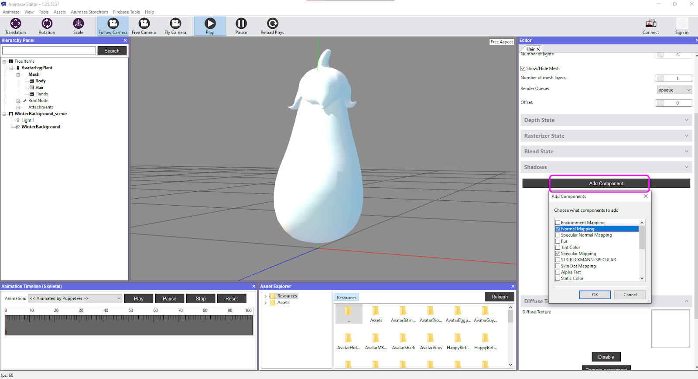
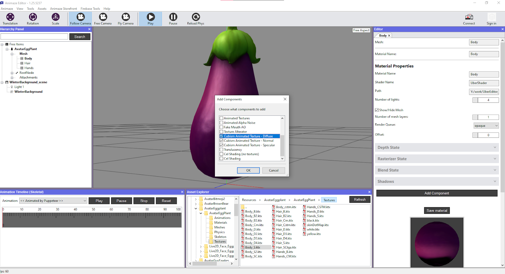
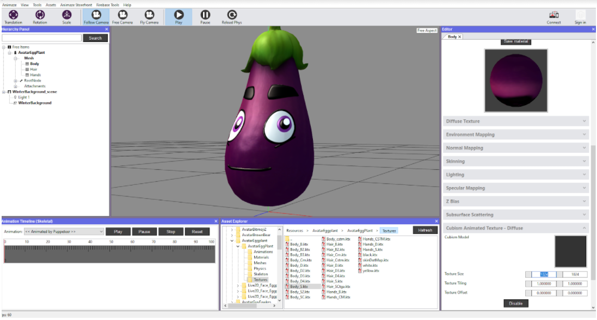
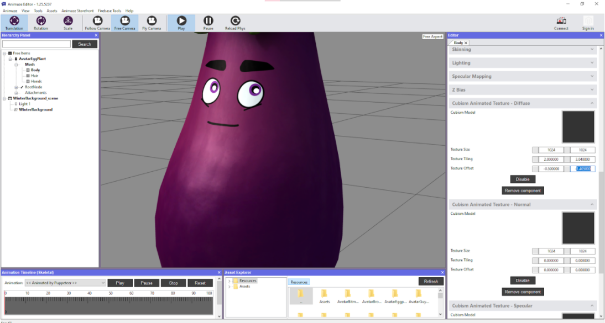
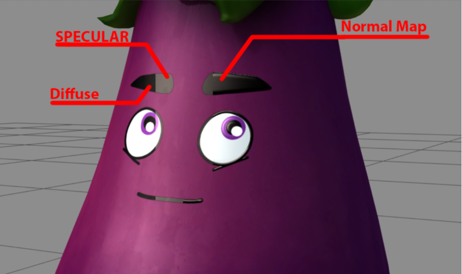

Animazeエディターでアバターをアセンブルする方法
ハイブリッドアバターをアセンブルするために、以下の手順をおすすめします。1. 「3Dオブジェクトをインポート」をクリックしてジオメトリをインポート

2. コンポーネントを追加を押して、マテリアルの中に欲しいテクスチャーを追加。これにより新しいウインドウが開き、アバターに有益な機能を選ぶことができます。それに応じて、マテリアルとシェーダーを割り当てます。

3. アニメーション化された2Dコンポーネントを追加
この手順では、アニメーション化された2Dコンポーネントを3Dの体にペーストするために、ディフューズオプションを選択することが最低限必要となります。ディフューズ、スペキュラー、法線マッピングのオプションを選択することをおすすめします。

法線マッピングとスペキュラーのオプションがアバターに合った場合、Photoshopかそれに近い編集ソフトウェアを使用したCubismで使用されたアセットに変換する必要があります。

変換後、Cubismにファイルを追加し、他のファイルにも同じインプットをするために、もう一度同じプロセスを繰り返してください**。
4. 2Dコンポーネントを選択し、3Dコンポーネントの体に合わせた2Dコンポーネント（顔）のプロポーションを作成。この値はテクスチャータイルを改変し、テクスチャータイルの調整をオフセットにでき、これによって3D ジオメトリに合わせた2Dの顔の寸法を変更できます。 
テクスチャーオフセットを調整

スペキュラー、ディフューズ、法線マップの違いの例。

注意：
-
モデルはアニメーション化されたテクスチャー1つだけで動きます。3つある必要はありあｍせん。（例：ディフューズ・テクスチャーのみ使用）